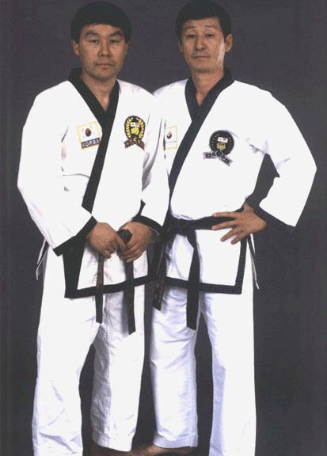

History
History of TaeKwonDo
Tae Kwon Do is the Korean martial art of health, fitness and self-defense. The main feature of Tae Kwon Do is that it is a free fighting combat sport using bare hands and feet to repel an opponent. Translated literally, TaeKwon Do means "Foot, Hand, Art," that is, the art of foot and hand fighting. However, there is much more to Tae Kwon Do than kicking and punching. Tae Kwon Do training aims to develop better coordination, self-confidence, physical and mental discipline, and all-round fitness. Tae Kwon Do is a guide for the formation of outstanding character. It is a modern international and Olympic sport and one of the greatest martial arts in the world. Tae Kwon Do is so much more than a mere fighting system.
Development of TaeKwonDo
In order to gain a better understanding of Tae Kwon Do, it is necessary to have some knowledge of the history of Korea, and to learn how such a small country managed to survive through three thousand years of being besieged, raided, and occupied. The earliest indication of martial arts practice in Korea is documented in paintings from the Kokuryo Dynasty (AD 37 to 668); apart from these enigmatic paintings there is no other record of martial arts practice. At the beginning of the Koryo dynasty (AD 953 to 1392), this interest in martial arts was developed further and taught to the Korean military forces under the name 'Soo Bahk.' Finally, during the Yi Dynasty (1907 to 1945), the first Korean martial arts manual was published covering twenty-four techniques.
By the end of the Second World War the five major "Kwans" (schools) in Korea were:
| Chung Do Kwan | Moo Duk Kwan | Chang Moo Kwan | Song Moo Kwan | Ji Do Kwan |
|---|---|---|---|---|
| Won Kook Lee, 1945 | Hwang Kee, 1945 | In Yoon Byuna, 1946 | Byung Chik Ro, 1953 | Gae Buyng Yun, 1953 |
Tae Kwon Do was perfected by the Korean Martial Arts movement (the above Masters) in April 1955, at which time the name Tae Kwon Do was also chosen and the first President (General Choi Hong Hi) was elected. In 1959 the Korean Tae Kwon Do Association (KTA) began a program of international development, and in 1972 the World Tae Kwon Do Federation (WTF) was founded and based at the Kukkiwon (World Tae Kwon Do Center). The first World Tae Kwon Do Championships was held at the Kukkiwon in May 1973. As a result of the WTF's effort, energy, and enthusiasm, Tae Kwon Do is now a fully recognized Olympic sport.
WTF and ITF
In 1966 General Choi Hong Hi made a goodwill trip to North Korea, and as a result, he became very unpopular with many South Koreans. General Choi was forced to resign from the KTA and emigrated to Canada where he founded the International Tae Kwon Do Federation (ITF). The ITF concentrated on the forms developed by General Choi, while the WTF developed the Palgwes. Later the WTF introduced the TaeGuks, which are still practiced today. The ITF practices the semi-contact part of Tae Kwon Do, while the WTF practices the full-contact part. Since the schism, there have been many attempts to reunite WTF and ITF, so far without success. Unfortunately, it is very unlikely that there will ever be a union within Tae Kwon Do, since both styles have evolved in different ways.
TaeKwonDo Traditions and Practices
The place for training in Tae Kwon Do is known as the "Dojang," which translates to "the place of training in the way." When entering the Dojang, the students will show their commitment to Tae Kwon Do by pausing at the door and performing a standing bow towards the instructor. If the instructor is not present, the bow is made to the centre of the training hall.
Tae Kwon Do techniques are quite often practiced with a kiup, a yell made simultaneously with the execution of the technique. As the technique is executed, the abdomen contracts to push out the breath and to make the ki, the energy, flow out from the centre of the body to empower the technique. Allowing the out breath to form into a shout can increase the power and focus; this is the kiup, and it signifies full commitment of body and spirit to that particular technique. In training, kiup is useful for keeping your momentum and accuracy up when you are becoming tired. In sparring, kiup is used to give extra force and focus to techniques, and also as a force in itself. A good focused kiup can really move an opponent back or momentarily stop him or her in their tracks. An unexpected kiup may have a further advantage in breaking up a sparring rhythm that has become predictable, making space for an effective technique.
History of Choi's TaeKwonDo
Choi's TaeKwonDo, our parent studio, has a long history and tradition.
In 1968, Grand Master Dan Choi, along with several other instructors, came to California from Korea to introduce the then-unknown martial art of TaeKwonDo to the United States. Master Dan Choi became one of the first people to teach TaeKwonDo in the Bay Area. In 1971, Grand Master Dan Choi opened Santa Clara Valley's first TaeKwonDo studio, Choi's Institute of TaeKwonDo. Over the years, Choi's TaeKwonDo has produced many excellent black Belts, some of whom have become National and World Cup Champions. Instructors at many TaeKwonDo or martial arts schools in the Bay Area got their start under Grand Master Dan Choi or Grand Master Hyun Choi (Grand Master Dan Choi's younger brother). For example, Ernie Reyes (Senior) and Tony Thompson, who were among Grand Master Dan Choi's first black belts, went on to found West Coast Karate.
In 1998 Grand Master Hyun Choi founded the United Tae Kwon Do Association to unify all of the Choi's affiliated studios founded by his students. The UTA has twelve schools throughout the United States and one affiliate school in Seoul, Korea. Currently, the UTA has over 250 World Tae Kwon Do Federation (WTF) accredited black belts. The current United Tae Kwon Do Association's membership includes National and International Tournament Champions, 22 USTU certified Referees, and 8 International Referees (qualified to referee in International Tournaments such as the Olympics).
History of LeeJon TaeKwonDo
Grand Master Leonard Ortez, Director and founder of LeeJon TaeKwonDo in Blossom Valley, is one of the many highest-ranking black belts under Grand Master Hyun K. Choi. Grand Master Leonard Ortez is 7th Degree black belt with 30 years of teaching experience. Over the past two decades, Grand Master Leonard Ortez has received recognition nationally and internationally for his efforts in promoting and developing TaeKwonDo as a world sport, and for his dedication to preserving the traditional teachings of TaeKwonDo.
Master Ortez founded LeeJon in 1990. LeeJon moved to its new location on Camino Verde Drive in 2016.